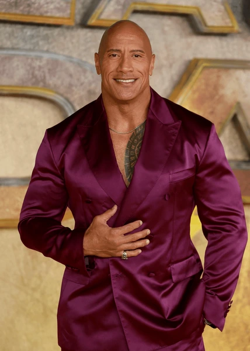

Early Life and Career
Dwayne Johnson grew up moving around the world due to his father being a professional wrestler. He played college football at the University of Miami and was a part of the 1991 national championship winning team. After not being good enough to play professional football, Johnson followed the family legacy and joined the WWF (now known as WWE), where he rose to fame as “The Rock”.
Dwayne Johnson Rise to Fame
After becoming possibly the most popular star in WWE history, Dwayne Johnson transitioned into acting in the early 2000s. He gained widespread recognition through his action movies and comedy films, making him one of the highest paid actors in the world. In addition to acting, Johnson is a producer, entrepreneur, and motivational public figure. Learn more on his IMDb page.
Film Highlights
- The Scorpion King (2002)
- Walking Tall (2004)
- Fast Five (2011)
- Pain & Gain (2013)
- San Andreas (2015)
- Moana (2016)
- Jumanji: Welcome to the Jungle (2017)
- Rampage (2018)
- Black Adam (2022)
Highlights & Ventures
- WWE Championships
- Fast & Furious Franchise
- Social Media Motivation
- Teremana Tequila
Gallery
